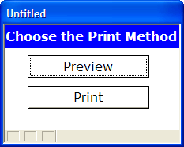

Displaying a Form as a Dialog Box
A dialog box is a window that is displayed to the user. The dialog box typically asks the user for some input. The dialog box is modal, meaning that the user must first close the dialog box before proceeding.
There are several techniques in Alpha Five for displaying dialog boxes, such as designing a message box (which uses the UI_MSG_BOX() function), designing an XDialog box (which uses the UI_DLG_BOX() function), or prompting for input (which uses the UI_GET_TEXT() function). Another way in which you can display a dialog box is by opening a form as a dialog box.
For example, the image below shows a form with two buttons. Depending on which button is pressed, you will want your script to take a different path.

In the above dialog box, the two buttons on the form need to have Xbasic code or actions associated with them.
There are two approaches to using a form as a dialog box.
In the first approach, the dialog box is "self-contained". The code necessary to preview or print the report is contained in the "Preview" and "Print" button.
For example, when you press the "Preview" button, it would execute these actions:
Preview the report
Close the form
The Xbasic for these two steps would be:
|
Report.preview("report_name") 'preview the report Topparent.close()'close the form |
The second approach to using a dialog box is to keep the dialog box as Lean as Possible. All of the buttons on the dialog do nothing, except close the form. I.e. the only code in each of the buttons on the dialog is:
|
Topparent.close() |
The code that actually prints or previews the report in handled by subsequent actions that execute after the dialog box closes. These commands are made conditional on the values in flag variables that are set by the dialog box.
For example, in the case of the above dialog box, assume that the dialog box was given a name dlg12.
If the user clicked on the "Preview" button, the dialog box would close and the flag variable called dlg12_preview would be set to .T. .
If, on the other hand the "Print" button was pressed, the dialog box would close and the flag variable called dlg12_print would be set to .T. .
You would then include two subsequent actions in your script, one to print the report, the other to preview the report. The print action would be made conditional on the dlg12_print flag variable being true, while the preview action would be made conditional on the dlg12_preview flag variable being true.
There are some important differences in these two techniques.
In the case of the "self-contained" approach, where the "Preview" button first previews the report, then closes the dialog box, the report preview window (which is normally a modeless window) will become a modal window (because it was launched from a modal window).
In the second case, however, the modal dialog box closes first, and then the Preview action executes. In this case, the preview window will be modeless. I.e. you will be able to leave the preview window open on the screen while continuing to use other aspects of Alpha Five.
See Also